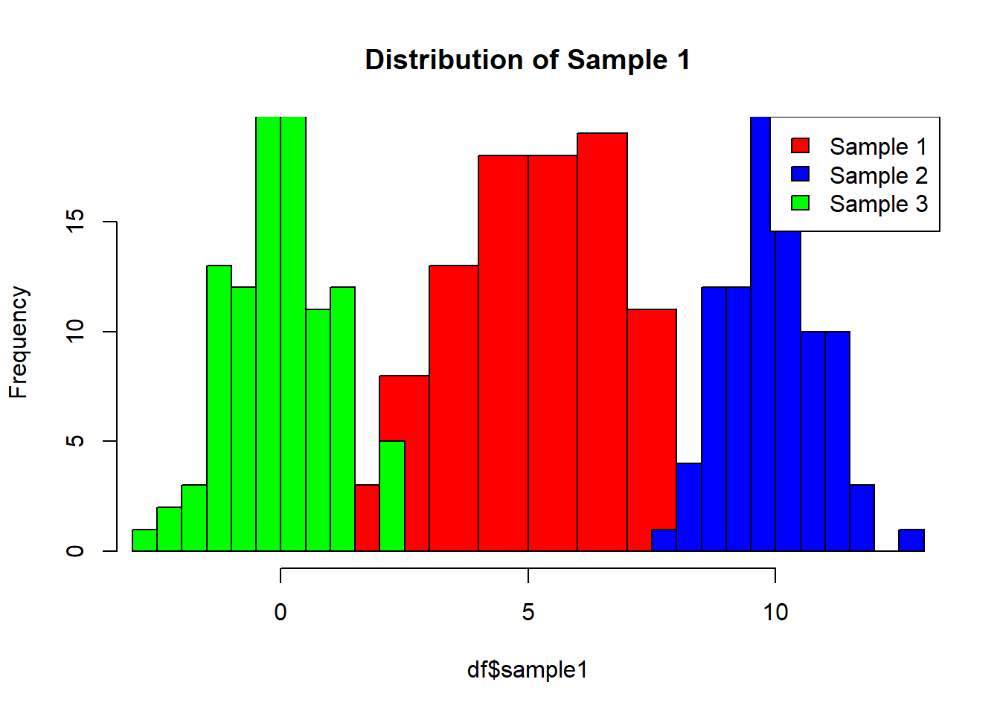
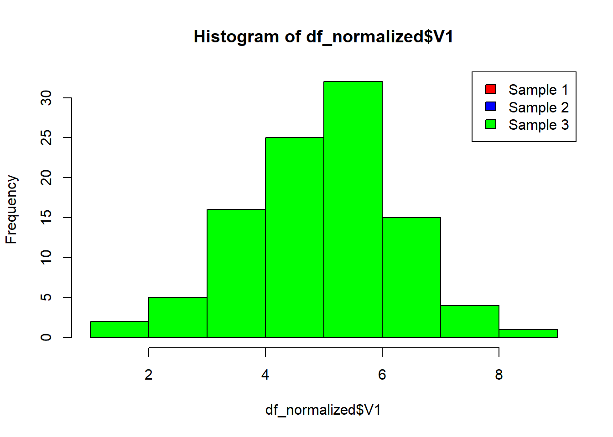

Mastering Quantile Normalization in R: A Step-by-Step Guide
code
rtip
operations
Author
Steven P. Sanderson II, MPH
Published
March 28, 2024
Introduction
Quantile normalization is a crucial technique in data preprocessing, especially in fields like genomics and bioinformatics. It ensures that the distributions of different samples are aligned, making them directly comparable. In this tutorial, we’ll walk through the process step by step, demystifying the syntax and empowering you to apply this technique confidently in your projects.
Understanding Quantile Normalization
Before we dive into the code, let’s understand the concept behind quantile normalization. At its core, quantile normalization aims to equalize the distributions of multiple datasets by aligning their quantiles. This ensures that each dataset has the same distribution of values, making meaningful comparisons possible.
Example
Step 1: Load Your Data
First things first, you’ll need some data to work with. For the sake of this tutorial, let’s say you have a dataframe called df containing your datasets.
set.seed(42) # For reproducibilitydf <-data.frame(sample1 =rnorm(100, mean =5, sd =2),sample2 =rnorm(100, mean =10, sd =1),sample3 =rnorm(100))head(df)
hist(df$sample1, col ='red', xlim=c(min(df), max(df)), main ='Distribution of Sample 1')hist(df$sample2, col ='blue', add =TRUE)hist(df$sample3, col ='green', add =TRUE)#add legendlegend('topright', c('Sample 1', 'Sample 2','Sample 3'), fill=c('red','blue', 'green'))

Step 2: Perform Quantile Normalization
Now, it’s time to perform quantile normalization using R’s built-in quantile() function. This function calculates quantiles for a given dataset, which is essential for aligning the distributions. Function from: https://lifewithdata.com/2023/09/02/how-to-perform-quantile-normalization-in-r/
Absolutely, let’s break down this R code block piece by piece:
1. Function Definition:
qn <-function(.data){# ... function body here ...}
This defines a function named qn that takes a data frame (data) as input. This data frame is most likely your dataset you want to normalize.
2. Sorting Each Column:
data_sort <-apply(.data, 2, sort)
This line sorts each column of the data frame data independently. Imagine sorting rows of data like sorting words in a dictionary. Here, we are sorting each column (each variable) from smallest to largest values. The result is stored in data_sort.
3. Calculating Row Means:
row_means <-rowMeans(data_sort)
This line calculates the average value for each row in the sorted data frame (data_sort). So, for each row (each data point), it finds the mean of the sorted values across all variables. The result is stored in row_means.
This part is a bit trickier. It creates a new matrix (data_sort) with the same dimensions (number of rows and columns) as the original sorted data. Then, it fills each row of this new matrix with the corresponding row mean calculated earlier (row_means). The byrow argument ensures this replication happens row-wise.
5. Ranking Each Value’s Position:
index_rank <-apply(.data, 2, order)
Similar to sorting, this line assigns a rank (position) to each value within its column (variable) in the original data frame (data). Imagine a race where the first place gets rank 1, second place gets rank 2, and so on. Here, the rank indicates the original position of each value after everything was sorted in step 2. The result is stored in index_rank.
This line creates an empty matrix (normalized_data) with the same dimensions as the original data frame. This will eventually hold the normalized data.
7. Looping Through Columns and Assigning Ranked Values:
This is the core of the normalization process. It loops through each column (variable) of the original data frame (data). For each column, it uses the ranks (index_rank) as indices to pick values from the sorted data with row means (data_sort). Basically, it replaces each value in the original data with the value from the sorted data that has the same rank (original position). This effectively replaces the original values with their corresponding row means (representing the center point) based on their original order.
8. Returning the Normalized Data:
return(normalized_data)
Finally, the function returns the normalized_data matrix, which contains the quantile normalized version of your original data frame.
In essence, this code performs a type of rank-based normalization where each value is replaced with the row mean that corresponds to its original position after sorting all the data together. This approach ensures that the distribution of values across columns becomes more consistent.
Step 3: Explore the Results
After quantile normalization, you’ll have a list of normalized datasets ready for further analysis. Take a moment to explore the results and ensure that the distributions are aligned as expected.
summary(df)
sample1 sample2 sample3
Min. :-0.9862 Min. : 7.975 Min. :-2.69993
1st Qu.: 3.7666 1st Qu.: 9.409 1st Qu.:-0.71167
Median : 5.1796 Median : 9.931 Median :-0.02474
Mean : 5.0650 Mean : 9.913 Mean :-0.01037
3rd Qu.: 6.3231 3rd Qu.:10.462 3rd Qu.: 0.65254
Max. : 9.5733 Max. :12.702 Max. : 2.45959
# Explore the resultssummary(normalized_data)
V1 V2 V3
Min. :1.430 Min. :1.430 Min. :1.430
1st Qu.:4.154 1st Qu.:4.154 1st Qu.:4.154
Median :5.029 Median :5.029 Median :5.029
Mean :4.989 Mean :4.989 Mean :4.989
3rd Qu.:5.812 3rd Qu.:5.812 3rd Qu.:5.812
Max. :8.245 Max. :8.245 Max. :8.245
Step 4: Obtain Quantiles
Now that the data is normalized, we can extract the quantiles to compare the distributions across datasets. This will help you confirm that the normalization process was successful.
As we can see, the quantiles of the normalized data are consistent across the different datasets. This indicates that the distributions have been aligned through quantile normalization.
Let’s visuzlize for another confirmation
df_normalized <-as.data.frame(normalized_data)hist(df_normalized$V1, col ='red')hist(df_normalized$V2, col ='blue', add =TRUE)hist(df_normalized$V3, col ='green', add =TRUE)legend('topright', c('Sample 1', 'Sample 2','Sample 3'), fill=c('red','blue', 'green'))

Wrapping Up
Congratulations! You’ve successfully mastered quantile normalization in R. By understanding the underlying concept and applying the quantile() function effectively, you can ensure that your datasets are comparable and ready for downstream analysis.
I encourage you to experiment with different datasets and explore the impact of quantile normalization on your analyses. Remember, practice makes perfect, so don’t hesitate to try it out on your own data. Happy coding!